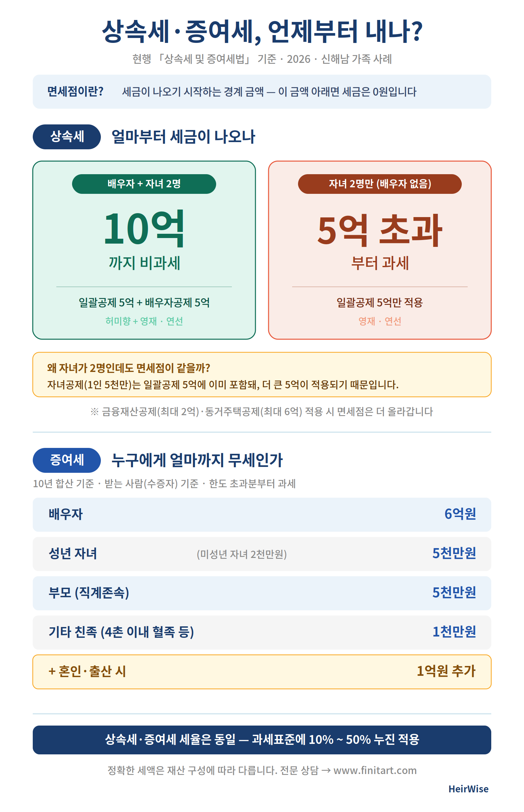

배우자가 있으면 10억 원, 없으면 5억 원. 상속세가 나오기 시작하는 경계는 생각보다 가깝습니다. 수도권에 집 한 채만 있어도 넘는 경우가 많습니다. 내 경우는 어떤지, 1분이면 확인할 수 있습니다.
현행 「상속세 및 증여세법」 기준으로, 세금이 나오는 경계와 증여 공제 한도를 한 장으로 정리했습니다.

세금이 나오는 분만이 아닙니다. 재산이 많지 않아도 분쟁·빚·절차 때문에 미리 알아야 할 것이 있습니다.
실제로 상속세가 나옵니다. 절세·납부 재원·사전증여 설계가 곧 돈으로 연결됩니다.
2차 상속에서 면세점이 10억에서 5억으로 떨어져, 자녀에게 세금이 몰립니다. 미리 대비가 필요합니다.
유류분 다툼, 빚 상속, 3개월·6개월 기한은 재산 규모와 상관없이 모두에게 적용됩니다.
상속세는 사망일로부터 6개월 안에 현금으로 납부해야 합니다. 준비가 없으면 선택지가 좁아집니다.
Syn Dae Sik · 한국재무설계(주) FP · AFPK·RC. 법학(상속법)과 재무설계, 보험·부동산·연금, 데이터 분석을 결합해 상속·증여를 한 사람이 다각도로 설계합니다. 김·장 상속법 마스터 과정 수료.